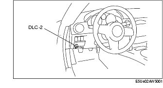

Workshop Manual ➭ BRAKES ➭ DYNAMIC STABILITY CONTROL ➭ DSC SYSTEM INSPECTION
DSC SYSTEM INSPECTION
id041500800700
{: #wp1059776}
Preparation
-
Verify that battery is fully charged.
-
Turn the ignition switch to the ON position, and verify that the ABS warning light goes out after approx. 3 s.
-
Turn the ignition switch off.
-
Jack up the vehicle and support it evenly on safety stands.
-
Shift to the N position.
-
Verify that all four wheels rotate.
-
Rotate the inspected wheels by hand, and verify there is no brake drag.
• If there is any brake drag, perform regular brake inspection. {: #wp1059865}• If there is no brake drag, perform DSC HU/CM operation inspection.
ABS Control Inspection
-
Perform "Preparation".
-
Connect the M-MDS to the DLC-2.{: #wp1059915}

- Set up an active command mode inspection according to the combination of commands below.
Brake pressure retention
|
Command name {: #wp1060092} |
Inspected wheels {: #wp1060094} |
|||
|---|---|---|---|---|
|
LF {: #wp1060210} |
RF {: #wp1060213} |
LR {: #wp1060216} |
RR {: #wp1060219} |
|
|
V_TRC_L {: #wp1059962} |
OFF {: #wp1059964} |
|||
|
V_TRC_R {: #wp1060127} |
||||
|
V_STB_L {: #wp1060143} |
||||
|
V_STB_R {: #wp1060159} |
||||
|
LF_INLET {: #wp1060175} |
ON {: #wp1060178} |
OFF {: #wp1060181} |
OFF {: #wp1060184} |
OFF {: #wp1060187} |
|
LF_OUTLET {: #wp1060191} |
OFF {: #wp1060194} |
|||
|
LR_INLET {: #wp1060322} |
ON {: #wp1060331} |
|||
|
LR_OUTLET {: #wp1060306} |
OFF {: #wp1060315} |
|||
|
RF_INLET {: #wp1060364} |
ON {: #wp1060370} |
|||
|
RF_OUTLET {: #wp1060348} |
OFF {: #wp1060354} |
|||
|
RR_INLET {: #wp1060424} |
ON {: #wp1060436} |
|||
|
RR_OUTLET {: #wp1060408} |
OFF {: #wp1060420} |
|||
|
PMP_MOTOR {: #wp1060392} |
||||
Brake pressure reduction
|
Command name {: #wp1060664} |
Inspected wheels {: #wp1060666} |
|||
|---|---|---|---|---|
|
LF {: #wp1060782} |
RF {: #wp1060785} |
LR {: #wp1060788} |
RR {: #wp1060791} |
|
|
V_TRC_L {: #wp1060534} |
OFF {: #wp1060536} |
|||
|
V_TRC_R {: #wp1060699} |
||||
|
V_STB_L {: #wp1060715} |
||||
|
V_STB_R {: #wp1060731} |
||||
|
LF_INLET {: #wp1060747} |
ON {: #wp1060750} |
OFF {: #wp1060753} |
OFF {: #wp1060756} |
OFF {: #wp1060759} |
|
LF_OUTLET {: #wp1060763} |
||||
|
LR_INLET {: #wp1060894} |
OFF {: #wp1060897} |
ON {: #wp1060903} |
||
|
LR_OUTLET {: #wp1060878} |
||||
|
RF_INLET {: #wp1060936} |
ON {: #wp1060942} |
OFF {: #wp1060945} |
||
|
RF_OUTLET {: #wp1060920} |
||||
|
RR_INLET {: #wp1060987} |
OFF {: #wp1060993} |
ON {: #wp1060999} |
||
|
RR_OUTLET {: #wp1060971} |
||||
|
PMP_MOTOR {: #wp1061068} |
ON {: #wp1061071} |
|||
Caution
• To protect the DSC HU/CM, the solenoid valve and the pump motor used during active command mode stay on for only 10 s or less each time they are switched on.
*Note*{: #wp1061118}
• When working with two people, one should press on the brake pedal, and the other should attempt to rotate the wheel being inspected.
-
Send the command while depressing on the brake pedal and attempting to rotate the wheel being inspected.
-
While brake pressure is maintained and a DSC HU/CM operation click sound is heard, confirm that the wheel does not rotate. While brake pressure is being reduced and an DSC HU/CM operation click sound is heard, confirm that the wheel rotates.
• Performing the inspection above determines the following:
- The DSC HU/CM brake lines are normal. {: #wp1061174}- The DSC HU/CM hydraulic system is not significantly abnormal (including DSC HU/CM). {: #wp1061190}- The DSC HU/CM internal electrical parts (solenoid, motor and other parts) are normal. {: #wp1061204}- The DSC unit and DSC HU/CM output system wiring harnesses (solenoid valve, relay system) are normal.
• However, the following items cannot be verified.
- Malfunction with intermittent occurrence of the above items {: #wp1061242}- Malfunction of DSC HU/CM input system wiring harnesses and parts {: #wp1061256}- Extremely small leaks in the DSC HU/CM internal hydraulic system
DSC Control Inspection
-
Perform "Preparation".
-
Connect the M-MDS to the DLC-2.{: #wp1061304}

- Set up an active command mode inspection according to the combination of commands below.
Caution
• To protect the DSC HU/CM, the solenoid valve and the pump motor used during active command mode stay on for only 10 s or less each time they are switched on.
|
Inspected wheels {: #wp1061512} |
||||
|---|---|---|---|---|
|
Understeer control inhibited {: #wp1061644} |
Oversteer control inhibited {: #wp1061650} |
|||
|
LF {: #wp1061628} |
RF {: #wp1061631} |
LR {: #wp1061634} |
RR {: #wp1061637} |
|
|
V_TRC_L {: #wp1061380} |
ON {: #wp1061382} |
OFF {: #wp1061438} |
ON {: #wp1061444} |
|
|
V_TRC_R {: #wp1061545} |
OFF {: #wp1061548} |
ON {: #wp1061551} |
OFF {: #wp1061557} |
|
|
V_STB_L {: #wp1061561} |
OFF {: #wp1061564} |
|||
|
V_STB_R {: #wp1061577} |
||||
|
LF_INLET {: #wp1061593} |
OFF {: #wp1061596} |
OFF {: #wp1061599} |
OFF {: #wp1061602} |
ON {: #wp1061605} |
|
LF_OUTLET {: #wp1061609} |
OFF {: #wp1061621} |
|||
|
LR_INLET {: #wp1061823} |
ON {: #wp1061829} |
|||
|
LR_OUTLET {: #wp1061807} |
OFF {: #wp1061813} |
|||
|
RF_INLET {: #wp1061791} |
ON {: #wp1061800} |
|||
|
RF_OUTLET {: #wp1061775} |
OFF {: #wp1061784} |
|||
|
RR_INLET {: #wp1061882} |
ON {: #wp1061885} |
|||
|
RR_OUTLET {: #wp1061866} |
OFF {: #wp1061869} |
|||
|
PMP_MOTOR {: #wp1061975} |
ON {: #wp1061978} |
|||
-
Send the command while rotating the wheel being inspected by hand in a forward direction.
-
Confirm that the wheel does not rotate easily while a DSC HU/CM operation click sound is heard.
• Performing the inspection above determines the following:
- The DSC HU/CM brake lines are normal. {: #wp1062041}- The DSC HU/CM hydraulic system is not significantly abnormal (including DSC HU/CM). {: #wp1062057}- The DSC HU/CM internal electrical parts (solenoid, motor and other parts) are normal. {: #wp1062071}- The DSC unit and DSC HU/CM output system wiring harnesses (solenoid valve, relay system) are normal.
• However, the following items cannot be verified.
- Malfunction with intermittent occurrence of the above items {: #wp1062109}- Malfunction of DSC HU/CM input system wiring harnesses and parts {: #wp1062123}- Extremely small leaks in the DSC HU/CM internal hydraulic system